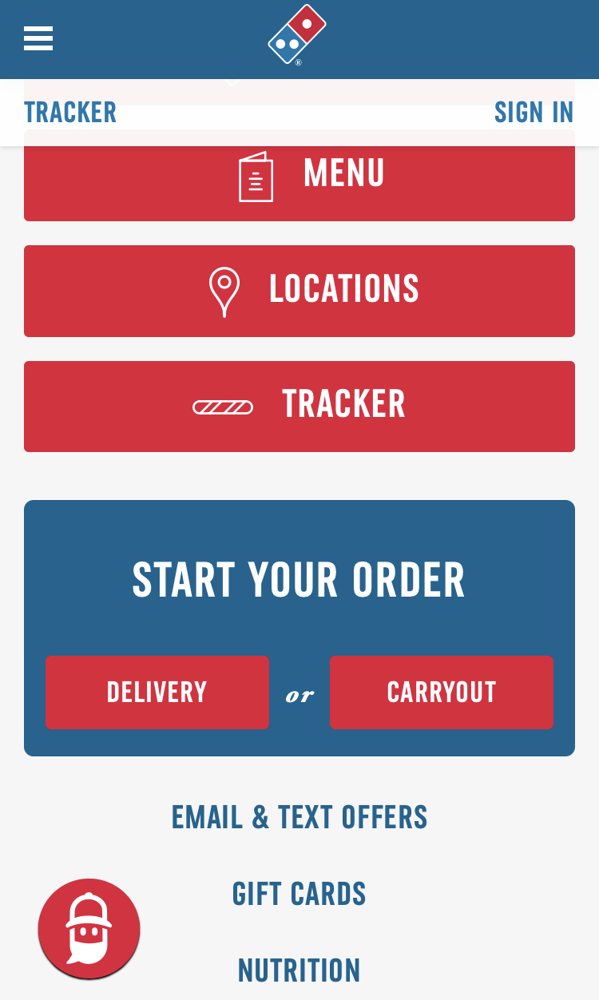
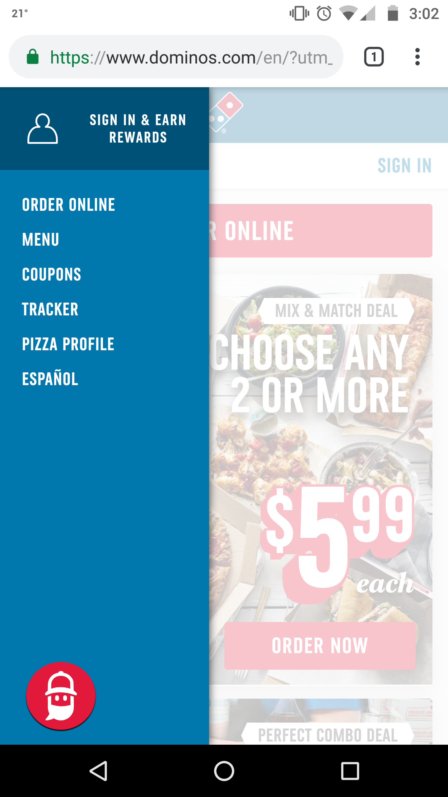
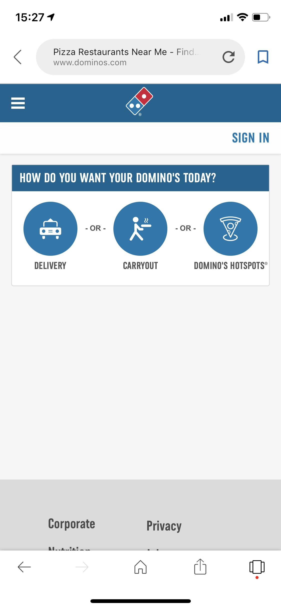
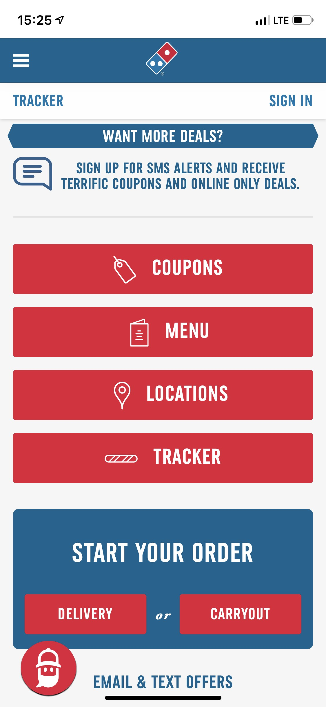
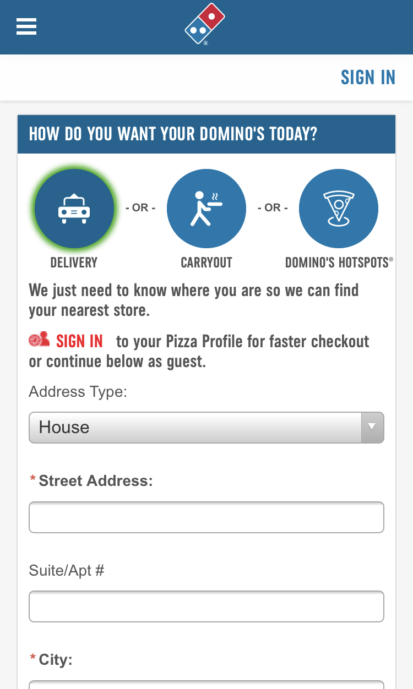
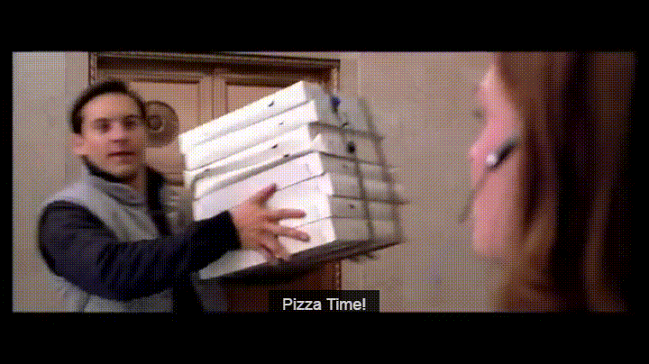

Design - Analysis Assessment
dominoes.com
Design Principles
Proximity — BriAnna Marsh
Dominos' order web page uses good proximity to separate the different areas from each other. At the top the three categories aligned together with proper space in between so that they are visibly grouped together but not suffocating each other. Below, each input box is grouped with its label so the user can distinguish what each is meant to be filled out for. There is also adequate white space in between each element which creates a clean design that isn't crowded despite the amount of information.
Alignment — Maren Stewart
This menu on the Dominoes website is for the most part left-aligned. The 'Sign in & Earn Rewards' heading is center-aligned and positioned to the right of the menu.
Repetition — Chad Carroll
Repetition, is the main focus of this screenshot. The buttons all look the same and have the same design. This helps with the user experience to help with simplicity. With the principle of repetition implemented here, the users clearly see their options and know what they are for.
Contrast — Chad Carroll
The principle of contrast is very clearly shown in this page. The buttons are all a bright red, making them clearly visible to the user, and enabling them to quickly read the site. The site also uses the combination of blue and red to make the delivery buttons really stand out.The combination of blue red and white throughout the page, helps to keep interest from the user.
Typography — BriAnna Marsh
There's basically only one main type used throughout the website. Which is the big blocky sans-serif font demonstrated in the photo. The font is easily read and has a professional feeling without being too serious. Dominos does use a secondary font very minimally throughout its pages, it can be seen in the screenshot between "Delivery" and "Carryout". The secondary font is a simple serif font italicized and provides a little bit of contrast from the main font.
Site Purpose Statement
The purpose of this site is to
Target Audience
- Age: 13-90
- Occupation: Anything and Everything
- Income: People of every income bracket, it's only $7.
- Other: It's literally anyone who wants a semi-quick meal for not very much money, and because they deliver it makes it possible for people who can't even drive.
Persona
- Name: Peter Parker
- 
- Occupation: Student
- Primary Device: His cellular device
- Quote: 'I'm hungry and I don't want to make myself food because I have lots of homework.'